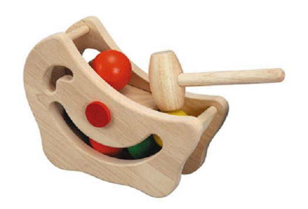
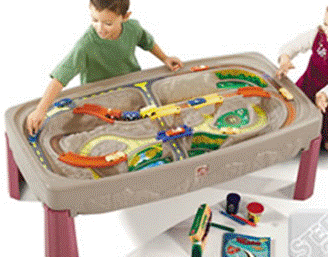
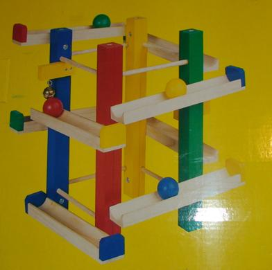
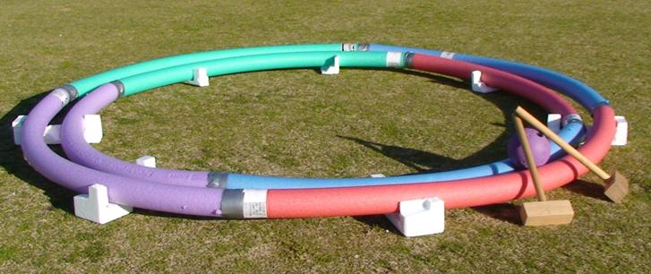
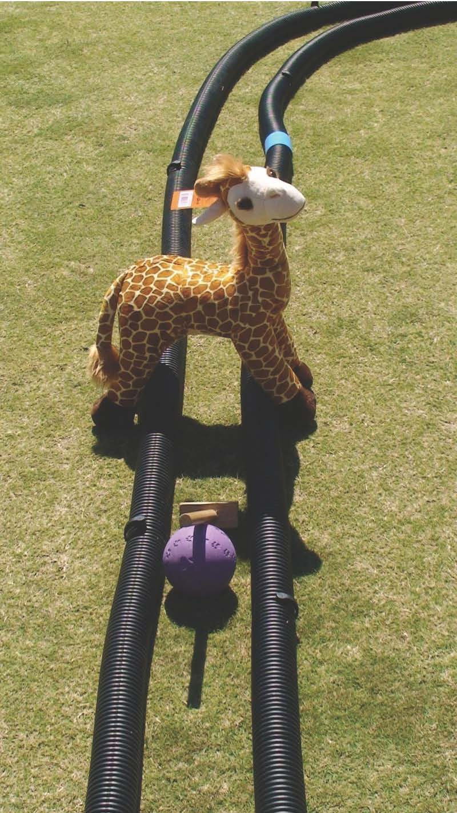
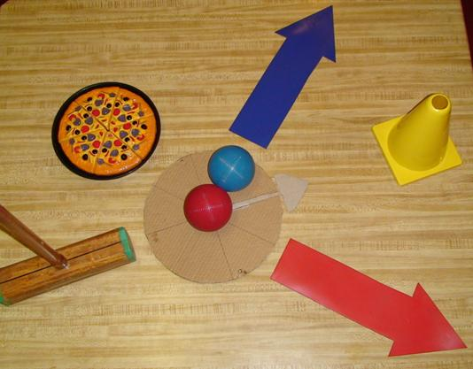
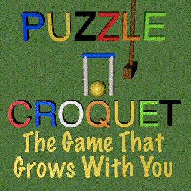
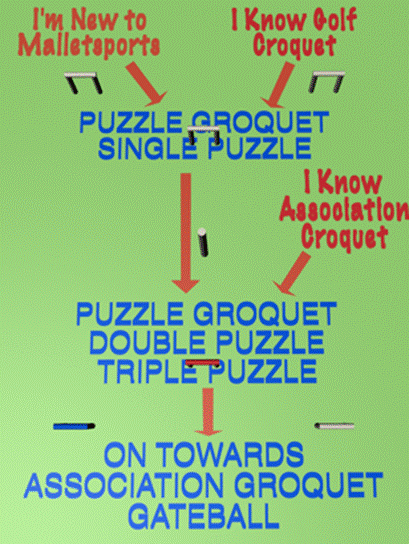

KIDS AND SCHOOLS COACHING
ACA DRAFT SCHOOL COACHING SYSTEM
PART B : THE PROGRAMS
MALLETSPORTS AND SCHOOLS CURRICULUM
I have not included the enormous amount of literature that relates to the issues of learning and schools. The National Curriculum is not yet complete, but the Victorian VELS is well established. The following is a discussion of how we can explain that Malletsports can tie up to the VELS of Victoria.
The VELS (Victorian Essential Learning Standards)
We believe that Malletsports will be useful in several of the VELS and has a role to play in all three strands, Physical, Personal and Social Learning, Discipline Based Learning and Interdisciplinary Learning.
Physical, Personal and Social Learning : Our program will help students in :
Health and Physical Education : The benefits here are of a gentle sport for many students who do not want to energise.
Personal Learning : In Malletsports, students have a gradual pathway to becoming their own learners, and being able to stand as individuals amidst Group Dynamics.
Interpersonal Development. Group Dynamics and understanding the diversity of people in teams are important to personal growth. In Malletsports, there are opportunities to sometimes follow, sometimes lead, but always with a view to a Student gaining their own selfhood.
Discipline Based Learning : Not everyone copes with Discipline based learning and there are many skills a student can only get to success with by gradually learning to discipline the mind. This may help in other area, which also require concentration and persistance.
Malletsports have natural uses in
The Arts : this teaches visualisation, production and planning skills, and allows creative solution finding
Language : Some of our variants reward the players with letters and Works gained when going through a hoop, and these are fun ways to start of learning reading and word skills. Later, the complexity of written Malletsports material can be challenging.
The Humanities
Mathematics : Malletsports contains mathematics galore, and students will gradually find that what they learn in class is useful on the croquet court, and what they learn on the croquet court is useful in class.
Malletsports is a great arena for Interdisciplinary Learning:
Communication : Whether for an individual player or a team, a student in Malletsports will learn about effective communication.
Design : Students will be encouraged to design and create their own patterns of ball movement. This is challenging, and can lead to greater design skills.
Creativity : The problem solving in Malletsports may add layers of thinking which are often untapped. For Creativity, the sport may benefit a student greatly.
Thinking : Malletsports requires many different types of thinking, from logic to intuitive, from left to right hemisphere, and to co-ordination of both hemispheres.
Again, our sport has a unique complex shot, the two ball shot, which may help lay down beneficial neural pathways.
SAMPLE MALLETSPORTS PRESCHOOL AND SCHOOLS PROGRAMS
GOAL : TO get Children playing malletsports in a lifelong learning environment.
A program which can be used in both Schools and Active After Schools
Utilising : Group and Individual Discovery Learning, based on some Skills Acquisition and Problem Solving.
Conforming to and adding to : National Curriculum, as developed for the Victorian Essential Learning Standards.
MALLETSPORTS ADVANTAGES :
POINT OF DIFFERENCE : Our Unique Two ball shot, which may have brain and personality positives with 2 hemisphere development and co-ordination.
TACTICAL AND STRATEGIC ADJUNCT :
Variants to teach deep problem solving through to variants which are Slowed Down versions of many other grab and stash sports. The Deliberation means the strategies employed in other sports can be observed and discussed at the same time they are played. This is a great advantage to games such as Football.
In terms of the Active After-Schools Community Program, we have target activities and game, and invasion activities and games, as well as co-operative activities and games.
PHYSICS AND GEOMETRY PROBLEM SOLVING : Malletsports involves some very complex ball production skills, which can teach a great deal about the physical world, and the theory of mathematics. There are also many opportunities for discipline learning.
A PARTNERSHIP WITH SCHOOLS AND TEACHERS :
Our program aims to also ensure that Schools and Teachers can continue with Students who want to keep going in the sport. Clubs will also provide coaching and attempt to ensure that there are critical mass groups of like minded young people.
We recognise that to get a participant from Beginner to Top Player can be between 40 and 200 coaching sessions.
However, young players from Victoria have now played at the very top levels of Croquet, and are currently amongst the top players in the world.
| AGE | PROGRESSION | ENTERING |
0-4 |
Fun Introduction Methods Rails, Adventure etc |
|
4-6 |
Fun and Two Ball as magic Mini-croquet |
Quick going over of Fun Methods Two Ball as magic |
6-8 |
Long and Short of It Game Mini-croquet with 2 ball A two ball activity Modified Gateball |
Above, quickly, + Long & Short |
9-12 |
Golf and Puzzle A two ball Game such as Cannonball ! |
Above + Golf and Puzzle |
13-15 |
Puzzle, and Gateball |
Golf, and Two Ball |
15-18 |
Gateball and Association |
Golf, Two Ball and Puzzle |
19-30 |
Specialising |
Golf, Two Ball and Puzzle |
THE PROGRAMS
We have 7 week programs, which get the participant able to continue playing a game.
The basics of the programs :
Preschool Program : (Also Active After Schools for beginners) This program is just about getting competence. No competition, and no aggression. Two ball shot is shown as play. Adventure and mini-croquet courses. Animals as Hoops.

0 to 3 : Babies are happy to watch things move around, and touch and occasionally push. At 1.5, they can hit a mallet onto a ball in controlled conditions. At 2 they roll balls around a simple table top train set. They are happy constructing and knocking down. Just hitting mallets on balls, rolling balls and watching and enjoying.
At 2.5, they can see the two ball shot in action.
At 3 : hitting the ball with the mallets around a circuit of pool spaghetti. They can hit the two ball shot in a very controlled toy.
For the 4 and 5 year olds, they can be out playing on Mini Croquet Course.
We need to create the right toys for this age group.
At Brunswick, I use Wacka and Cracka as Coaches for this age group. Wacka and Cracka are two wombat characters we have had for years at Brunswick Malletsports Club.



Primary Program One : (Also Active After Schools) 6 to 8 years old :
Adventure and Mini, then A game of Long and Short, with some play of two ball shots. A two ball track is worked with for aim and shot production. No competition no aggression. Determination OK.
(The Long and Short of it : Each player gets One Long Shot to establish a spot somewhere near the next hoop.
All players do this, then they go to the Hoop and one by one, they make their way to the hoop and through, counting the shots. They are in Pairs, so a player may nudge the partner closer, to reduce their number of shots. if tied in score, those two balls repeat the hoop, as a shoot out.)
After each Hoop, child gets given a letter, and after the course, gets to make a word.
Learning on the Line and with a Gauge O rail through a hoop
Wide Hoops
earning the Two ball shot, for fun using the Pizza, the Stencil, the
Spaghetti hoops and a co-operative game with 4 children.


The Mini Croquet Course Which is two ball set up and then they hit a single ball through a hoop, then a shot closer to the next stencil or set up. The second ball goes on a separate adventure, maybe through a wide hoop or hitting a wall, etc. Hoops as Historical Icons.
Activities involving the two ball shot, such as Space Invader. This to develop into a Two ball game.
Primary Program Two : Also Active After Schools 8 years plus.
Start with Long and Short, then some Puzzle, and then Golf OK, but mainly an attempt to get them to Puzzle. Two ball shot becomes 'assessed'.
Competition OK, determination OK, no aggression.
After each Hoop, child gets to pick up a word, and at the end of the course, creates a sentence.
Secondary Programs :
General : There has been a lot of experience with Secondary Schools. We need to begin to get Malletsports in as a Sport of Choice, and know that School Coaches and Physical Education Teachers can also coach the game.
The goal here needs to be to get Students playing one of our two more complex games, Association or Gateball. This can be achieved by a pathway approach, using Puzzle Croquet.
If starting : some long and short, then both Golf and Puzzle, with assessed two ball shots and extra coaching. To arrive at Puzzle, so they can go to 'State' level of Association or Gateball. Learn breaks to be assessed for quality and scored for ball movement.
Competition, Determination and Aggression OK.
Our State Associations will need to put on Championships for these students, at the different levels they are on the Malletsports Pathway.

A Create Your Own Club Program : important for many VELS.
VET PROGRAM : We intend to develop with partnership schools some VET programs. This will include Group Dynamics, to lead to Coaching, Life Coaching, and Organisational Dynamics pathways. We will need to work hard to get a course written up and approved by the relevant authorities. This is a long term project.
